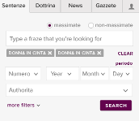
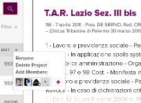
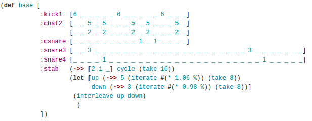
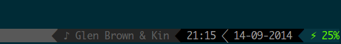
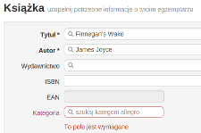
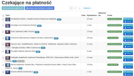

Technical skills
Ruby On Rails
5 years of experience, 3+ years with production code. Pragmatic approach, knowledge of best practices and experience with decoupling application logic from the framework. Good understanding of OOP, lot of experience with writing automated tests with RSpec. Big fan of Continuos Integration.
JavaScript
I know Backbone.js and AngularJS. I have lot of experience with async code and APIs. I prefer elegance of CoffeeScript but I have good knowledge of JavaScript good and bad parts.
Frontend
Fluent with Bootstrap, HTML5 and CSS. If possible, I use SASS in my projects.
Databases
Experience with MySQL, PostgreSQL and Redis. I know when to move application logic to database using functions and triggers and I'm not scared of writing SQL queries by hand if appropriate. I have experience with ElasticSearch as a search engine and data store.
APIs and Cloud
I have implemented serveral APIs for mobile and web applications. I am familiar with REST, Amazon AWS, Heroku, Pusher, Google Cloud Messaging. I also have experience with working with legacy SOAP services.
Linux
I work on Linux. I use VIM as my editor. I have lot of experience with maintaining Linux servers. Familiar with Chef, Docker and LogStash
Projects and companies
UpTick June 2014 till now (as MONK contractor)
UpTick is iPhone daytrading application for Stocks and Forex. I joined UpTick team half-way. I was developing new features for JSON API in Rails 4.1 and Grape working closely with remote iOS team. I have implemented support for new financial data source, parallel chart data downloading, user geolocation and lot of other stuff. I have improved test coverage and made working with the code more comfortable. Application is heavily optimized using Postgres functions and triggers and memcached as a cache backend.Ringpay (pivoted to Charing) February 2014 till May 2014 (as MONK contractor)
Ringpay started as Android application for small device-to-device payments. I have designed and developed complete JSON API (Rails 4.1) for mobile app. To limit battery drain, I preferred push notifications instead of polling when possible. Most challenging part was implementing symmetric-key encryption for all transaction requests, which made the app immune to HeartBleed-like attacks on SSL.SentenzeItalia Maintaining and improving during my work at MONK
  (click for bigger pictures)SentenzeItalia is Italian law documents search engine and aggregator. It was a legacy-code project. I have cleaned and refactored code, improving its quality and preparing for work on version 2 of the app. I have implemented document scraping from various sources (HTML, DOC, PDF, XML, RTF), resulting in nearly 1 million of law documents available for search (and thousands of new every month). We have used Rails and ElasticSearch on the backend, and AngularJS on the frontend. The result is fast and responsive tool for searching, browsing and commenting on law documents. Version 2 is now during beta testing and will be available soon.
Trov November 2013 till December 2013 (as MONK contractor)
Trov is mobile and desktop application for "collecting everything you own". I covered lot of existing code with tests, fixed lot of bugs and helped the team deliver final product on time. Frontend application was written with AngularJS and TypeScript. Backend used C# and ASP.NET. This was very interesting opportunity to get familiar with Microsoft web-application ecosystem.MONK December 2012 till now
I have improved serveral legacy applications with smart refactorings and unit tests, which resulted in lot of new features and more confidence in the code. I also worked as a contractor when building Ringpay, Trov and UpTick.Bluetrace August 2011 till January 2012
I have developed new features for bluBase web application for collecting data from bluetooth/wifi data gathering devices. To improve process of shipping new code to production, I have set up Continuos Integration process. I simplified process of updating devices code by using git as an update protocol.AKRA January 2012 till December 2012
I was a Senior Rails Developer in Akra team. I was making sure our staging servers are available for team and customers to use. I was pairing a lot with Junior developers sharing knowledge, best practices and improving overall coding culture in the team. I was also a leader in serveral Akra projects, including TurnYourTime (classified ads on map, pivoted to CleanAgents), ebookmakr (single-page Backbone applications for creating ebooks), our company intranet application for managing staff, WhatYouEat (social network for food lovers).Infakt.pl June 2011 till July 2011
I implemented statistics browser for management team. I have also set up Continuos Integration server that made shipping code to production by multiple developers easier.Open source and other
Functional programming
I am very interested in functional programming (especially Clojure). To learn a new language I have developed simple drums step sequencer using Overtone (see the code: Breakage).
Command line
I work only in command line, using Tmux and VIM. To improve my work environment, and as an excercise with Test-First approach, I have developed TmuxStatus, an object-oriented way to display information in Tmux status line. Code was test-driven using RSpec and designed around idea of segments (Composite design patter). I am using this tool all the time.
Book selling application (work in progress)
 I've made a Rails 3.x application for my girlfriend to help her put her books on Allegro.pl auction site. App manages 5000 auctions on Allegro.pl and pulls hundreds of transactions, payments and addresses monthly. I have integrated application with thermal printer to print stickers with addresses obtained from Allegro.pl, and added support for barcode scanner to lower time and cost needed to maintain a huge catalog of books. That have changed her hobby of selling books into full-blown business with nearly half thousand sold books per month today.